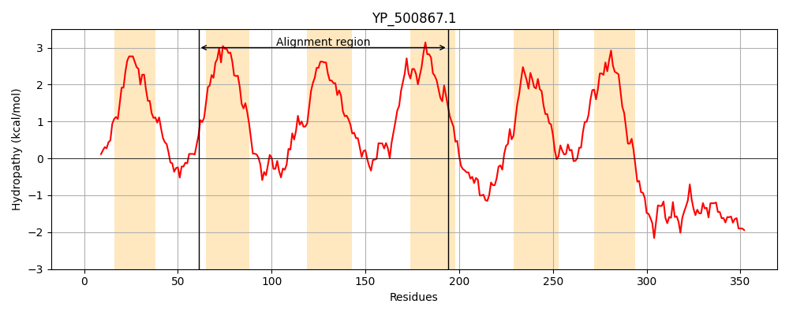
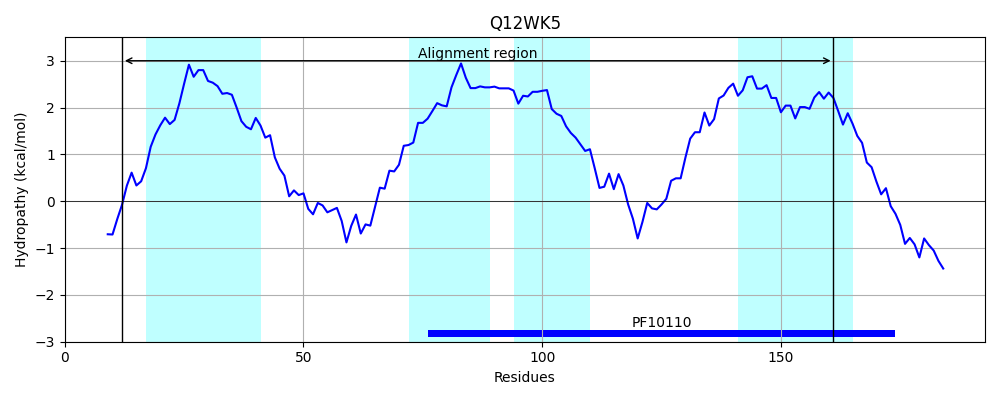
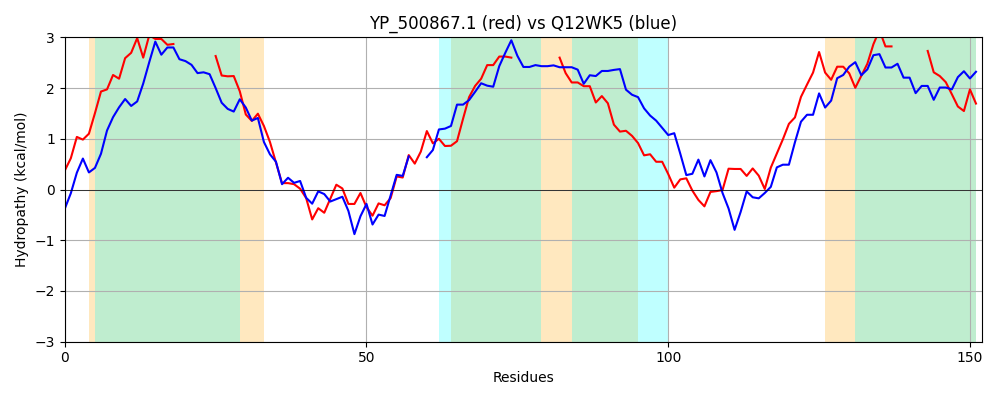

Hit Accession: Q12WK5
Hit TCID: 9.B.28.2.1
Hit Description: gnl|BL_ORD_ID|12654 gnl|TC-DB|Q12WK5|9.B.28.2.1 Putative uncharacterized protein OS=Methanococcoides burtonii (strain DSM 6242 / NBRC 107633 / OCM 468 / ACE-M) GN=Mbur_1249 PE=4 SV=1
Mach Len: 152
e:0.000841
Query TMS Count : 6
Hit TMS Count: 4
TMS-Overlap Score: 2.550000
Predicted Substrates:CHEBI:6668;maltose
BLAST Alignment:
| Protein Hydropathy Plots: | |
|---|---|
|  |  |
Pairwise Alignment-Hydropathy Plot: | |
|  | |